Introduction
This slide deck walks through setting up a Linux virtual machine on Windows. It takes about 1 hour.
Get VirtualBox
We'll use VirtualBox to run our virtual machine. Go to the VirtualBox downloads page and download the Windows installer for VirtualBox, listed under "platform packages". Once it's downloaded, run the installer. It's safe to use the default installation settings.
Get Linux
Next, you need to select the Linux distribution you're going to install. There are dozens of different distributions available, and each has certain advantages and disadvantages. For the remainder of this tutorial, we'll focus on the Xfce edition of Linux Mint, because it's user-friendly and has reasonable hardware requirements. However, if you're interested in trying a different distribution, go for it! Virtual machines are a great, safe way to try out new operating systems and software. DistroWatch lists the most popular Linux distributions.
If you're following along with Linux Mint, download the disk image. This may take a while.
First let's configure a new virtual machine in VirtualBox. When you start VirtualBox, you should see a dialog like the one below.
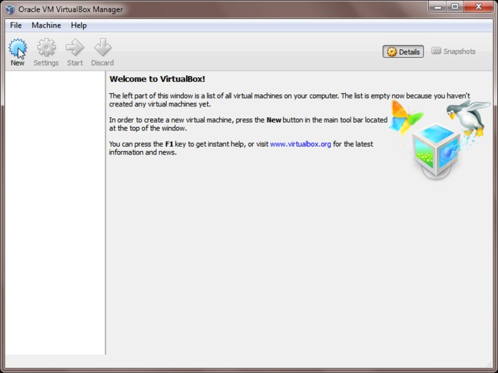Click on the "New" button.
Click on "Hide Description" to show the full details of the new virtual machine.

Enter "Linux" as the name of your virtual machine. VirtualBox will automatically guess the correct type and version for you.
Set the memory size to the largest power of 2 that's in the green (768 MB is also okay).
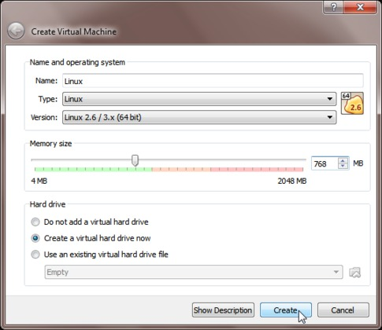Also select "Create virtual hard drive now."
Choose a location for the virtual hard drive your machine will use, and set the disk size to at least 20 GB. You can set a higher disk size, but make sure your computer has enough free disk space first.
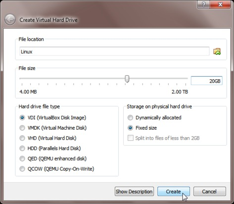Also select "Fixed size," which will give slightly better performance.
Once you finish setting up the virtual machine, you'll be returned to the main VirtualBox dialog.
Click on the "Settings" button.
On the Display tab, increase the video memory as much as possible (unless you like working at very low resolutions!).
Make sure the accelaration boxes are both unchecked, as they can cause problems on some computers.
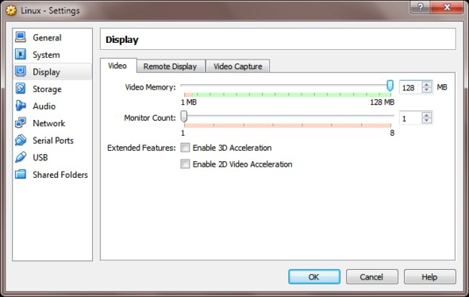On the Storage tab, click on the disk drive.
Use the add disk button to add the Linux Mint ISO to the drive.
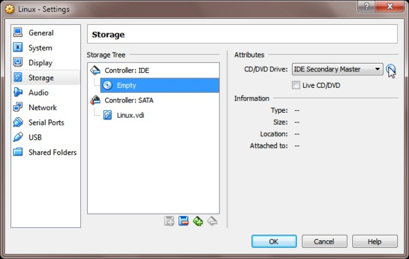After adding the Linux Mint ISO, it should be listed in the dialog.
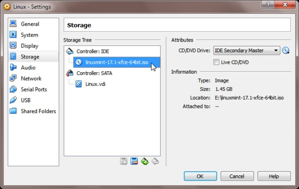On the Shared Folders tab, click the add folder button.
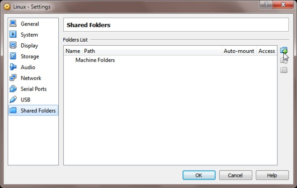Add a folder that's located in a convenient place on your computer. This will be important later if you want to transfer files to and from your virtual machine.
Also, make sure auto-mount is on.
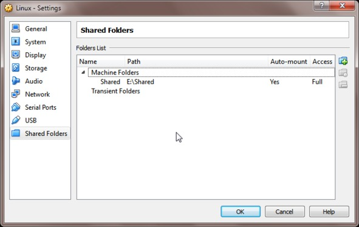You're finally done setting up your virtual machine! All that's left is to install Linux.
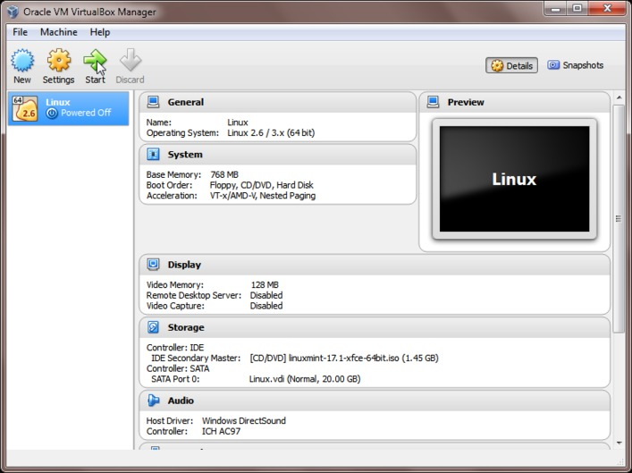Go ahead and press the "Start" button. You know you want to.
Be patient while the Linux installer boots; it can take several minutes. Once it's done, you should see a screen like the one below.
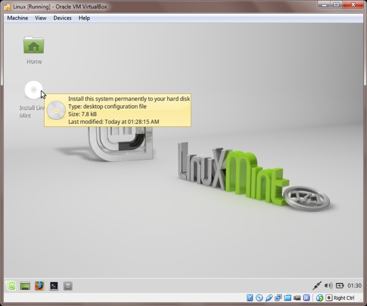Double-click on "Install Linux Mint."
Work through the installer dialogs. Most of them are self-explanatory, but check the following slides for details on a few of them.
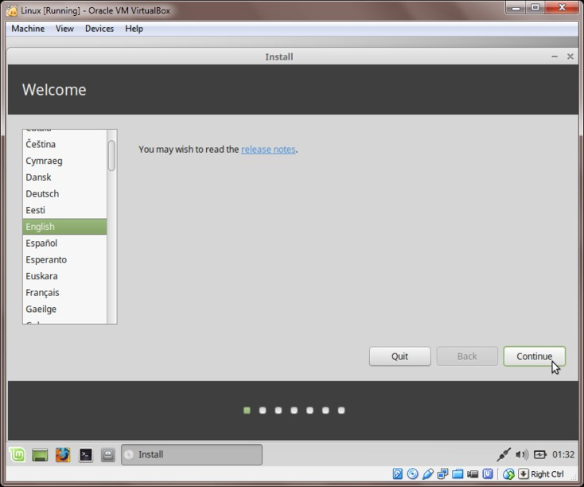Choose "Erase disk and install Linux Mint" at this step.
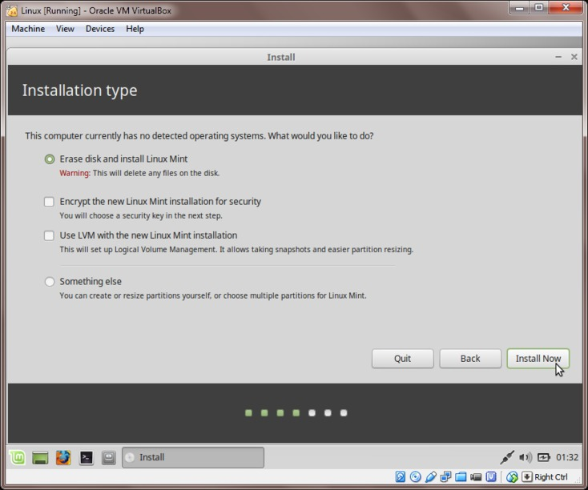Choose a sensible username and password. Remember your password, you'll need it to install programs on your virtual machine.
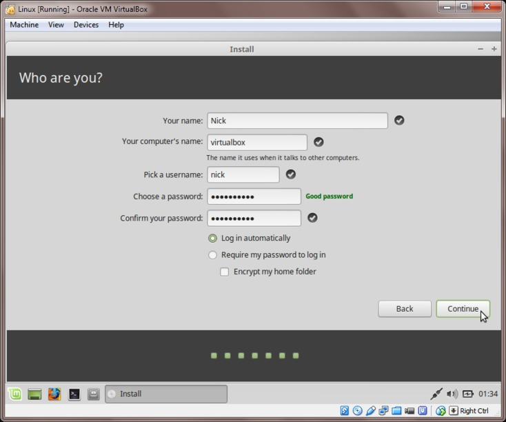The installation can take up to 30 minutes. After it's done, you'll see the prompt below. Click "Continue Testing."
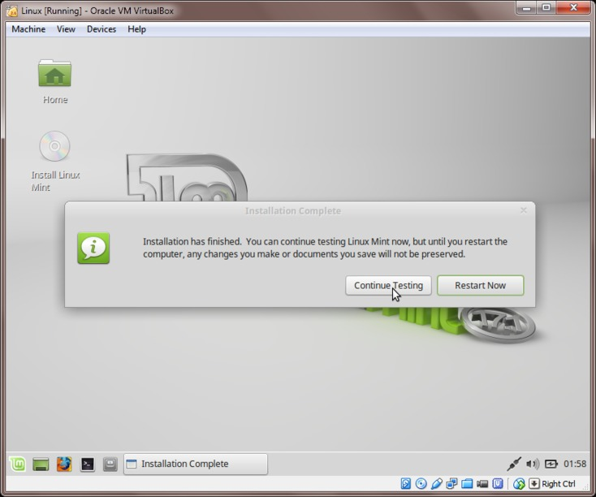In the Linux Mint applications menu, click the log out button, and use the prompt that appears to shut down the virtual machine.
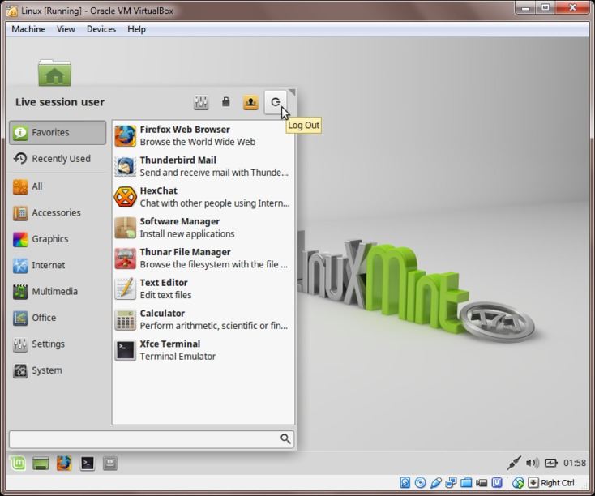After the machine has shut down, start it back up again. Once it's done booting, you should see a screen like the one below.

Congratulations, you've successfully installed Linux Mint!
You might want to use the software manager to install software we'll be using in this class.
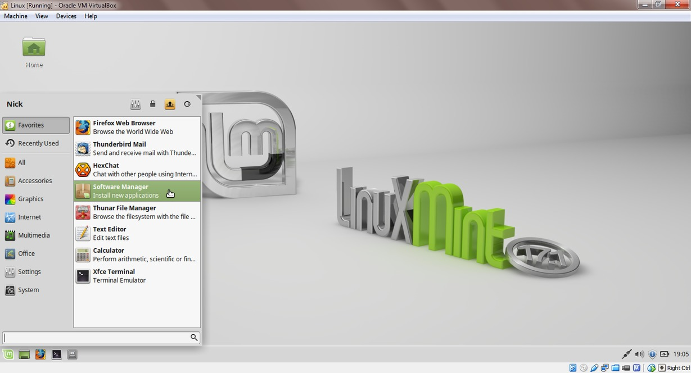In particular, install git...
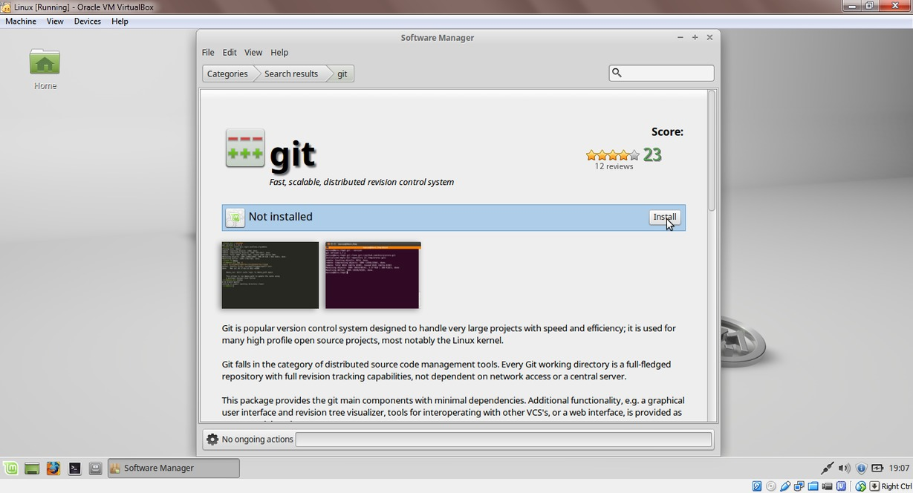...and R.
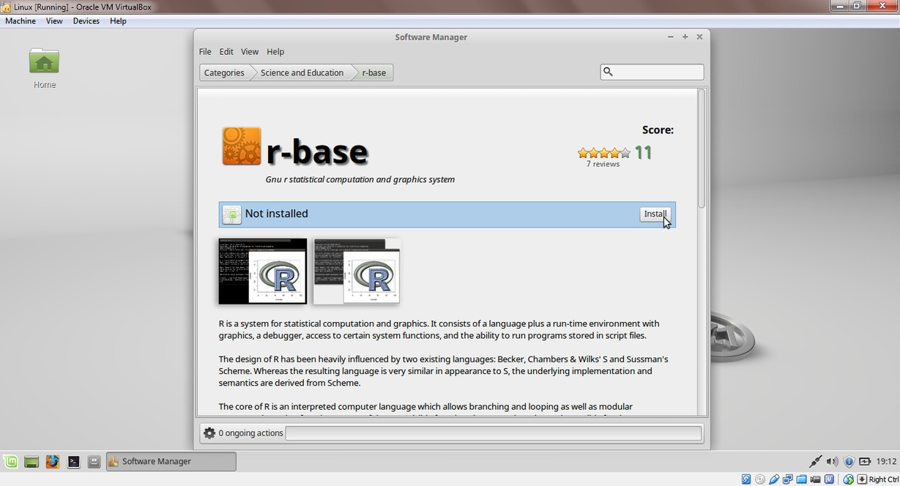Rather than shutting down your virtual machine when you're done with it, you might want to save it state. This is a bit like putting it to sleep, and makes it much faster to start up again later.
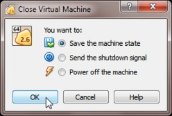Good job, you're done!